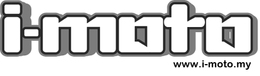

BRAND STORY — WHY WE EXIST
ライディングは、単なる移動ではなく、かけがえのない体験。ASMAXは、その時間から複雑さや不便を取り除くために生まれました。
ライディングギアは、
誰でもすぐに使えるべきだ。
複雑な設定も、慣れも必要ない。
MISSION
高度なライディングテクノロジーを、すべてのライダーの手に。
ASMAXは、モバイル・ワイヤレス技術における20年間の専門知識を結集して生まれたスマートライディングギアブランド。回路設計、センサー、ソフトウェア — 積み上げてきたすべてを、ライダーのために注ぎ込んだ。
2022
「どうすればライディングをもっと良くできるのか?」— たった一つの問いから、開発が始まった。
2023
世界中のライダーへ、シームレスな接続を届け始めました。
2025
日本正規品の販売と日本語サポートを確立。11月にはEVANGELION RACING公式コラボ「EVA R モデル」を投入し、全国の販売店網で店頭展開を開始。
2026
東京・大阪モーターサイクルショーでより多くのライダーと出会い、公式ストア購入特典としてメーカー保証を4年に延長。「長く安心して使ってほしい」を形にした。
VALUE 01
クリアな通信走行風の中でも、仲間の声がはっきり届くこと。ENCと音響チューニングが、会話から雑音を取り除きます。
VALUE 02
シームレスな接続トンネルでも、隊列が乱れても。メッシュ通信の自動再接続が、つながりを守り続けます。
VALUE 03
信頼性の高いパフォーマンス毎日の通勤から長距離ツーリングまで。走っている間、ギアは手間なく確実に機能するべきだからです。
毎日の通勤から、長距離ツーリングまで。
すべての製品は、実際のライダーの声をもとに設計しています。
ワイヤレス技術、ソフトウェア、ハードウェア。3つを組み合わせることで、シームレスなライディング体験を実現する。
目標は、単に製品を製造することではなく、インテリジェントなライディングエコシステムを構築すること。
自動再接続と3つの通信モード。最大50人がつながる。
ASMAX MODE →ENCが風切り音とエンジンノイズを抑え、声だけを通す。
「Hi Max」のオフライン音声操作とASMAX WORLDアプリ。
APP →つながるライディングデバイスの世界は、まだ広がり続ける。
街乗りからロングツーリングまで、世界中のASMAXライダーがコミュニティを広げています。あなたの走りも、その一員に。
AS FEATURED IN

FUTURE
06 — WHAT'S NEXT
より安全に、よりスマートに、ライダー同士をつなぐテクノロジーへ。通信システムから、コネクテッドなライディング体験全体へと広げていきます。
ASMAXの挑戦は、始まったばかりです。